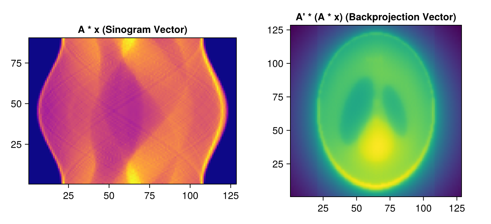

Tutorial 2: Using Forward and Backprojectors as Linear Operators
In-place API, Adjoint Test, Matrix-Free Computation with AstraProjectorMap, and Operator Norm Estimation.
Prerequisites
This tutorial uses Makie (recommended backend: CairoMakie) for visualization. If CairoMakie is not installed in your environment, add it by running using Pkg; Pkg.add("CairoMakie").
1. Introduction
In tomographic reconstruction, the greatest strength of the ASTRA Toolbox is not merely a collection of standalone reconstruction algorithms, but a high-performance computational engine that exposes forward and backprojection as linear operators.
Mathematically, forward projection is a linear operator $A$, and backprojection is its adjoint operator $A^T$: $y = Ax, \qquad x' = A^T y$
Topics covered in this notebook:
- In-place API (
project!,backproject!): Eliminating memory allocations in high-performance iterative loops. - Adjoint Test: Verifying that ASTRA's backprojector is mathematically the exact adjoint via the inner-product equality $\langle Ax, y \rangle = \langle x, A^T y \rangle$.
AstraProjectorMap: Wrapping ASTRA as Julia's standardAbstractMatrix, enablingA * xandmul!.- Operator Norm Estimation: Calculating the maximum singular value $\|A\|_2$ via power iteration.
2. Package Loading and Environment Setup
using AstraToolbox
using CairoMakie
using LinearAlgebra
using Random
Random.seed!(42)
println("Ready for Linear Operator exploration!")3. Defining Geometry and Preparing Buffers
Here we set up a 128×128 image domain and a parallel-beam geometry with 90 angles and 128 detector bins.
nx, ny = 128, 128
vol_geom = VolumeGeometry2D(nx, ny)
angles = Float32.(range(0, pi, length = 90))
det_count = 128
proj_geom = Parallel2DGeometry(angles, det_count, 1.0f0)
println("Volume shape: ", (nx, ny))
println("Sinogram shape: ", geom_size(proj_geom))4. Zero-Allocation Projections with the In-place API (project!, backproject!)
When performing large iterative computations in Julia, allocating a new array at each iteration with project(...) incurs substantial garbage collection (GC) overhead. Instead, use the In-place API to write directly into pre-allocated memory buffers.
Function Arguments:
project!(sinogram, volume, proj_geom; backend=...):- Writes the projection result directly into the first argument
sinogram(output buffer).
- Writes the projection result directly into the first argument
backproject!(volume, sinogram, proj_geom; backend=...):- Writes the backprojection result directly into the first argument
volume(output buffer).
- Writes the backprojection result directly into the first argument
# Pre-allocate zero-initialized output buffers
sino_buf = zeros(Float32, geom_size(proj_geom))
vol_buf = zeros(Float32, nx, ny)
# Random test image
test_vol = rand(Float32, nx, ny)
# In-place forward projection
project!(sino_buf, test_vol, proj_geom; backend = has_cuda() ? cuda() : cpu())
# In-place backprojection
backproject!(vol_buf, sino_buf, proj_geom; backend = has_cuda() ? cuda() : cpu())
println("In-place operations completed without memory reallocation!")5. Performing the Adjoint Test
A linear operator $A$ and its adjoint $A^T$ must satisfy the following relation for arbitrary vectors $x$ and $y$ in an inner product space: $\langle Ax, y \rangle = \langle x, A^T y \rangle$ where $\langle u, v \rangle = \sum_i u_i v_i$ denotes the standard Euclidean inner product.
If ASTRA's backprojector were not the true adjoint (matrix transpose), optimization solvers such as CGLS and FISTA would lose convergence guarantees. We now verify that this equality holds strictly within Float32 numerical precision.
# Random image vector x and random sinogram vector y
x = rand(Float32, nx, ny)
y = rand(Float32, geom_size(proj_geom))
# Compute Ax
Ax = project(x, proj_geom; backend = has_cuda() ? cuda() : cpu())
# Compute A^T y
ATy = backproject(y, proj_geom; volume_size = (nx, ny), backend = has_cuda() ? cuda() : cpu())
# Compute inner products <Ax, y> and <x, A^T y>
lhs = dot(Ax, y)
rhs = dot(x, ATy)
rel_diff = abs(lhs - rhs) / ((abs(lhs) + abs(rhs)) / 2)
println("<Ax, y> = ", lhs)
println("<x, A^T y> = ", rhs)
println("Relative Difference = ", rel_diff)
@assert rel_diff < 1e-4 "Adjoint test passed within Float32 numerical tolerance!"
println("--> Adjoint Test PASSED! ASTRA Backprojector is indeed the exact mathematical adjoint of Forward Projector.")6. AstraProjectorMap: Integration with Julia's LinearAlgebra Ecosystem
AstraToolbox.jl wraps the forward/backprojection pair into a virtual matrix operator AstraProjectorMap compliant with LinearAlgebra.AbstractMatrix{Float32}.
Features of AstraProjectorMap:
- Matrix-free operator: No massive matrix entries stored in memory.
- Dimensions: $(M \times N)$ where $M = \text{det} \times \text{angles}$ and $N = \text{nx} \times \text{ny}$.
- Direct support for
A * v,A' * w, and 5-argumentmul!(out, A, in). - Seamlessly usable with iterative solvers in
IterativeSolvers.jlandKrylov.jl.
# Instantiate AstraProjectorMap
A = AstraProjectorMap(proj_geom, vol_geom; backend = has_cuda() ? cuda() : cpu())
println("Operator A type: ", typeof(A))
println("Matrix dimensions (M x N): ", size(A))
println("Total virtual matrix elements: ", size(A, 1) * size(A, 2))Matrix-Vector and Adjoint Operations
Vectorized images vec(x) can be multiplied directly using standard matrix multiplication syntax A * v.
# Input image as a 1D vector
x_vec = vec(shepp_logan(nx))
# y = A * x (Forward projection)
y_vec = A * x_vec
# x_bp = A' * y (Backprojection)
x_bp_vec = A' * y_vec
# Reshape results back to 2D arrays for visualization
fig = Figure(size = (700, 320))
ax1 = Axis(fig[1, 1], title = "A * x (Sinogram Vector)", aspect = DataAspect())
heatmap!(ax1, reshape(y_vec, geom_size(proj_geom)), colormap = :plasma)
ax2 = Axis(fig[1, 2], title = "A' * (A * x) (Backprojection Vector)", aspect = DataAspect())
heatmap!(ax2, reshape(x_bp_vec, nx, ny), colormap = :viridis)
fig
7. Operator Norm Estimation via Power Iteration
When minimizing $\frac{1}{2}\|Ax - b\|^2$ with gradient descent or FISTA, the Lipschitz constant $L$ of $\nabla f(x) = A^T (Ax - b)$ is given by: $L = \|A^T A\|_2 = \|A\|_2^2 = \lambda_{\max}(A^T A)$ The step size $\alpha$ must be chosen as $\alpha < \frac{2}{L}$ (typically $\alpha = \frac{1}{L}$). We estimate the maximum eigenvalue $\lambda_{\max}(A^T A)$ using power iteration with A and A'.
# Estimate maximum singular value using power iteration
function estimate_operator_norm(A; maxiter = 25)
# Random initial vector
v = rand(Float32, size(A, 2))
v ./= norm(v)
sigma = 0.0f0
for iter in 1:maxiter
# v <- A^T * A * v
Av = A * v
v = A' * Av
n = norm(v)
sigma = sqrt(n)
v ./= n
end
return sigma
end
sigma_max = estimate_operator_norm(A)
L = sigma_max^2
println("Estimated Spectral Norm ||A||_2: ", sigma_max)
println("Lipschitz constant L = ||A||_2^2: ", L)
println("Recommended gradient descent step size (1/L): ", 1.0f0 / L)